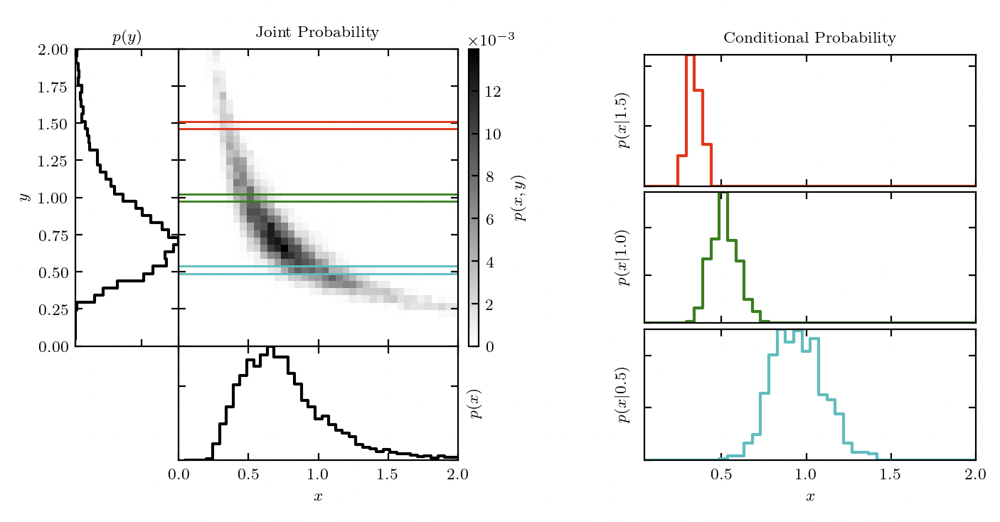

25 Dependence
We need a tool to study collections of variables. Knowledge of each individual PMF is of little help. Because variables can be dependent on each each other (they are not necessarily independent). We need to know their inter-relationship. Joint distribution gives the probability that two or more random variables simultaneously takes particular values.
Definition 25.1 (Joint distribution) The joint PMF of random variables \((X,Y)\) is given by \[f(x,y) = P(X=x,Y=y).\]
The joint CDF of random variables \((X,Y)\) is given by \[F(x,y) = P(X\leq x,Y\leq y).\]
Theorem 25.1 The discrete random variables \(X\) and \(Y\) are independent if and only if \[P(X=x,Y=y)=P(X=x)P(Y=y)\] for all possible values of \(x,y\).
Equivalently, the condition can be stated with CDF: the random variables \(X\) and \(Y\) are independent if and only if \[P(X\leq x,Y\leq y)=P(X\leq x)P(Y\leq y)\] for all possible values of \(x,y\).
Proof. \(X\) and \(Y\) are independent implies the event \(\{X=x\}\) and \(\{Y=y\}\) are independent for any \(x,y\). By Definition 10.1, we have \[P(X=x,Y=y)= P(\{X=x\}\cap\{Y=y\})=P(X=x)P(Y=y).\]
If \(X\) and \(Y\) are independent, then any function of \(X\) is independent of any function of \(Y\).
Definition 25.2 (Marginal distribution) The marginal distribution gives the distribution of a subset of variables in a joint distribution without reference to the values of the other variables.
The marginal PMF of \(X\) given the joint PMF of \((X,Y)\) is given by \[f_X(x) = \sum_y P(X=x,Y=y)=\sum_y f_{X,Y}(x,y).\]
It is easy to compute the marginal distribution given the joint distribution. However, in general, we cannot deduce the joint distribution from the marginal distribution. Unless the random variables are independent, the joint distribution is not the product of marginal distributions.

Example 25.1 Let \(X\) be an indicator of an individual being a current smoker. Let \(Y\) be the indicator of his developing lung cancer at some point in his life. The joint PMF of \(X\) and \(Y\) is as specified in the table below.
| \(Y=1\) | \(Y=0\) | Total | |
| \(X=1\) | 0.05 | 0.20 | 0.25 |
| \(X=0\) | 0.03 | 0.72 | 0.75 |
| Total | 0.08 | 0.92 | 1 |
The marginal PMF for having lung cancer is
\[\begin{aligned}P(Y=1)= & P(Y=1,X=0)+P(Y=1,X=1)=0.08,\\ P(Y=0)= & P(Y=0,X=0)+P(Y=0,X=1)=0.92. \end{aligned}\]
In this example, \(X,Y\) are not independent, because \[P(X=1,Y=1)\neq P(X=1)P(Y=1).\]
Definition 25.3 If a given number of random variables are independent and have the same distribution, we call them independent and identically distributed, or i.i.d for short.
- Independent and identically distributed (\(X,Y\) independent die rolls)
- Independent and not identically distributed (\(X\): die roll; \(Y\): coin flip)
- Dependent and identically distributed (\(X\): number of Heads; \(Y\): number of Tails)
- Dependent and not identically distributed (\(X\): economic growth; \(Y\): presidential election)
We view random sample as a collection of i.i.d random variables from the same population distribution. For example, let \(X_i\) be the test score of student \(i\). We say \(X_1,X_2,\dots,X_n \overset{iid}{\sim} G\) where \(G\) is the (unknown) population distribution for test scores.
The independent assumption means that one observation does not influence another, while the identically distributed assumption ensures all observations follow the same probability law. This perspective simplifies statistical analysis and is foundational for many statistical inference.